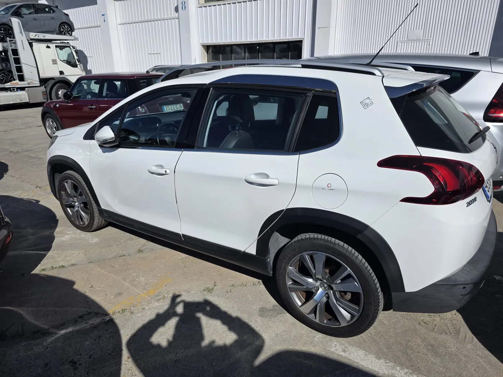

‹›
‹›Financiación disponible9.990€
Fiat Dobló ECO
1.4 T-Jet Gasolina + GNC
Furgoneta práctica y eficiente con etiqueta ECO, ideal para trabajo, reparto urbano o uso profesional con bajo coste de uso.
2021113.552 kmGasolina/GasManual
Coches G23
Vehículos de ocasión revisados, fotos reales, ficha clara, garantía de 12 meses y atención directa para comprar con tranquilidad.
Modelos reales añadidos desde las fichas y fotografías facilitadas. Todos con datos claros, garantía y contacto directo.
‹›1.4 T-Jet Gasolina + GNC
Furgoneta práctica y eficiente con etiqueta ECO, ideal para trabajo, reparto urbano o uso profesional con bajo coste de uso.
 ‹›
‹›1.6 TDI 115 CV
SUV diésel amplio, cómodo y con buen equilibrio entre consumo, presencia y uso diario.
 ‹›
‹›7G-DCT 136 CV
Compacto premium diésel con cambio automático, diseño deportivo y buena calidad interior.
 ‹›
‹›1.2 PureTech S&S Active 82 CV
Utilitario gasolina cómodo y económico, perfecto para ciudad y desplazamientos diarios.
 ‹›
‹›1.2 PureTech Active 110 CV
Vehículo familiar y práctico, con 5 plazas, mucho espacio interior y motor gasolina 110 CV.

‹›1.2 PureTech 110 CV Automático
SUV urbano automático, cómodo para ciudad y carretera, con motor gasolina y etiqueta C.
La compra de un coche de segunda mano necesita confianza. Por eso cada ficha muestra precio, kilometraje, año, combustible, cambio, etiqueta ambiental y fotografías reales del vehículo.
Comprobación de estado, documentación y datos esenciales antes de la entrega.
Un respaldo claro según condiciones de contrato y normativa aplicable.
WhatsApp, llamada y asesoramiento para resolver dudas antes de reservar.
Fichas limpias, fotos reales y detalles útiles para decidir mejor.
Te ayudamos a comparar modelos, revisar datos básicos y elegir el coche que encaje con tu uso real.
“Me explicaron la ficha del coche con claridad y pude resolver dudas antes de verlo.”
Cliente Coches G23Atención personalizada“Muy útil ver fotos reales, etiqueta, kilómetros y garantía en la misma página.”
Cliente Coches G23Proceso transparente“Contacto rápido por WhatsApp y respuesta clara sobre financiación y entrega.”
Cliente Coches G23Compra acompañadaGuías prácticas para elegir coche, revisar documentación y entender financiación.

Una guía clara para revisar historial, kilometraje, estado mecánico, documentación y garantía antes de reservar.
Leer artículo →
Diferencias entre comprar a profesional y a particular, qué suele cubrir la garantía y por qué conviene leer el contrato.
Leer artículo →
El informe del vehículo ayuda a comprobar cargas, precintos, embargos o incidencias administrativas.
Leer artículo →Sí, cada vehículo incluye revisión de estado y comprobación documental antes de la entrega.
Sí. Puedes consultar una cuota orientativa según entrada, plazo y vehículo elegido.
Los vehículos se anuncian con garantía de 12 meses según condiciones de contrato y normativa aplicable.
Sí. Contacta por WhatsApp o teléfono y te informamos de disponibilidad, estado y próximos pasos.